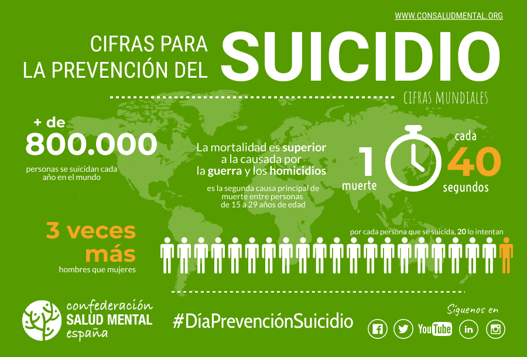

El suicidio es un problema de salud pública importante...
Centrarse en la prevención del suicidio es especialmente importante...
Si necesitas hablar con alguien de inmediato, puedes comunicarte con:
- La Línea Nacional de Prevención del Suicidio: (55) 5259-8121
- Un amigo o familiar de confianza
- Un profesional de la salud mental
También puedes hacer clic en el siguiente botón para encontrar recursos adicionales y apoyo:
Más ayuda por favor de apretar aquiLa prevención del suicidio es una preocupación seria...